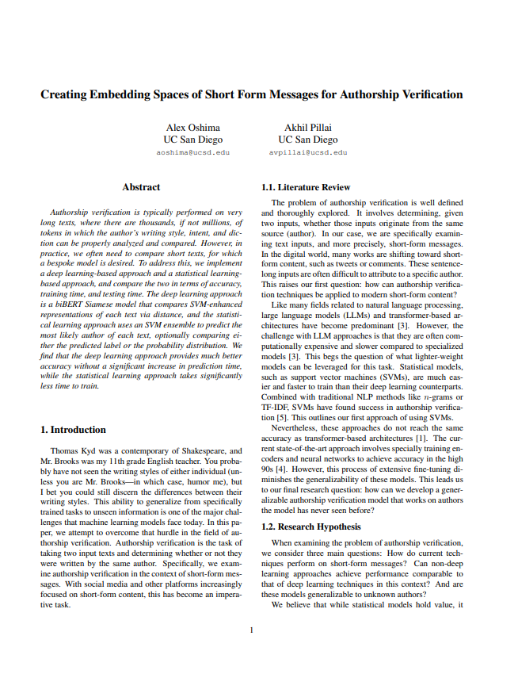

Authorship Verification Research
Creating Embedding Spaces of Short Form Messages for Authorship Verification
The deep learning approach is a biBERT Siamese model that compares SVM-enhanced representations of each text via distance, and the statistical learning approach uses an SVM ensemble to predict the most likely author of each text, optionally comparing either the predicted label or the probability distribution. We find that the deep learning approach provides much better accuracy without a significant increase in prediction time, while the statistical learning approach takes significantly less time to train.
Technologies Used
- Python
- PyTorch
- Scikit-learn
- NumPy
- Pandas
